── Attaching core tidyverse packages ──────────────────────── tidyverse 2.0.0 ──
✔ dplyr 1.1.4 ✔ readr 2.1.5
✔ forcats 1.0.1 ✔ stringr 1.5.2
✔ ggplot2 4.0.0 ✔ tibble 3.3.0
✔ lubridate 1.9.4 ✔ tidyr 1.3.1
✔ purrr 1.1.0
── Conflicts ────────────────────────────────────────── tidyverse_conflicts() ──
✖ dplyr::filter() masks stats::filter()
✖ dplyr::lag() masks stats::lag()
ℹ Use the conflicted package (<http://conflicted.r-lib.org/>) to force all conflicts to become errors
raw_data <-read.csv("./data/insurance.csv")
The dataset I’m using is Medical Costs Personal. It is a convenient dataset because it does not contain any missing values. It has a few limitations. Mainly that it pretty small, with only 1338 values. Also, it has not been updated in the last 8 years.
summary(raw_data)
age sex bmi children
Min. :18.00 Length:1338 Min. :15.96 Min. :0.000
1st Qu.:27.00 Class :character 1st Qu.:26.30 1st Qu.:0.000
Median :39.00 Mode :character Median :30.40 Median :1.000
Mean :39.21 Mean :30.66 Mean :1.095
3rd Qu.:51.00 3rd Qu.:34.69 3rd Qu.:2.000
Max. :64.00 Max. :53.13 Max. :5.000
smoker region charges
Length:1338 Length:1338 Min. : 1122
Class :character Class :character 1st Qu.: 4740
Mode :character Mode :character Median : 9382
Mean :13270
3rd Qu.:16640
Max. :63770
Before we begin modeling, its important to look at the distribution of the insurance charges on its own to see if we can get a feel for this data:
hist( raw_data$charges,main="Distribution of charges",xlab="Charge",ylab="frequency",col="lightblue",breaks=50)
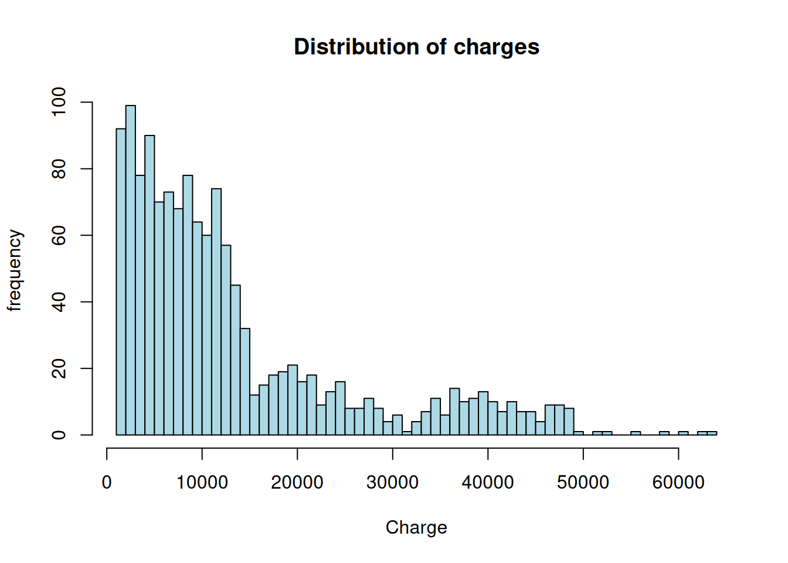
Clearly, the data is mostly clustered around charges < 15,000, and then has two smaller, looser clusters arround 20,000 and 35,000. The Median is 9382, and the Mean is 13270, so we can describe this distribution as having a long head. It is important to find out the characteristics of this head to prevent bias in charge prediction and modeling. Lets plot charge agains a few of the numeric values to see the distribution:
When separating the data out visually like this, its pretty clear that one of the clusters consist of people with higher BMI. The other cluster is harder to find indentifying characteristics for, since most of it is of people with BMI less than 30. It is possible that this cluster is centered around smoking, or some other variable not in this data set. Since the second and third quartiles of the smoking population seem to map fairly closely to the middle cluster in the first histogram, I think it is fairly highly that this middle cluster consists mostly of smokers.
Age, BMI, smoking, and charges are all somewhat positively correlated. Other than that, everything is pretty loosely spread throughout. This makes sense intuitively, as being old, having a high BMI, and smoking are all risk factors for potentially expensive medical problems. However, the correlation between the risk factors could lead to some false positive when building predictive models.
Class imbalance Assessment:
As we already saw, this dataset is only of claims made, which means that is represents a tiny minority of policy holders. It also contains some imbalance, as alreaady shown, with most of the claims being far lower than the mean. Lets explore the dataset a little further to see if there are any imbalances among the other variables.
hist(raw_data$age, main ="Distrubution of Ages", xlab ="Age", ylab ="frequency", col ="lightblue", breaks =50)
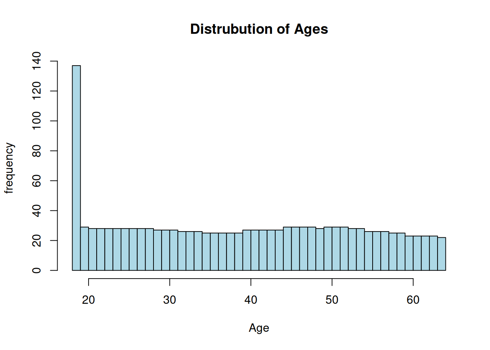
summary(raw_data$age)
Min. 1st Qu. Median Mean 3rd Qu. Max.
18.00 27.00 39.00 39.21 51.00 64.00
Of course, one constraint on this data is that it only contains adults. The datapoints are pretty uniformally spread among different agegroups, with 18-year-olds being overrepresented.
summary(raw_data$bmi)
Min. 1st Qu. Median Mean 3rd Qu. Max.
15.96 26.30 30.40 30.66 34.69 53.13
hist(raw_data$bmi, main ="Distrubution of BMI", xlab ="BMI", ylab ="frequency", col ="lightblue", breaks =50)
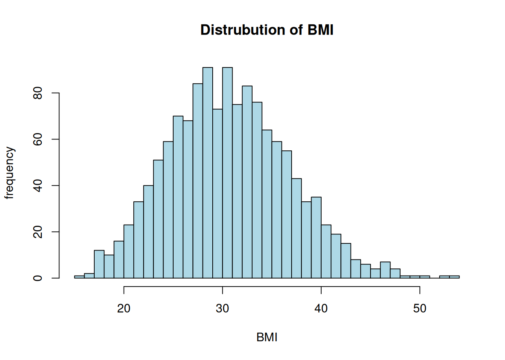
The BMI data looks more or less normally distributed. with the mean and median being extremely close.
The only imbalances here are with smokers and non-smokers, and with the children variable, though it makes sense that there are more non-smokers than smokers. However, since smoking is a known risk factor for disease and correlated with higher count, it could possibly cause some other categories to be over-represented in high claims. The children variable is highly unbalanced, with lower values being much more highly represented.
Diving deeper into the clusters
I already speculated a little bit about the different clusters in the data, as they appear to show up in the general distribution of charges, and perhaps to have something to do with BMI and smoking. In order to explore this idea, lets try to isolate the clusters, first by filtering only by amount charged.
First, lets retry the correlation analysis. The ages and bmi graphs seemes to show different groups, possibly with different relationships. Lets see if these partitions show that more clearly.
In each of these clusters (or rather partitions), the correlation between age and charges is much higher, which shows how age is correlated with charges within a certain range, but is not correlated with what range that correlation is in. Something similar happens with BMI, with it being correlated with higher charges, but only in the highest partition. In contrast, smoking becomes much less correlated when the data is separated in this way.
A %>%select(age, charges) %>%plot()
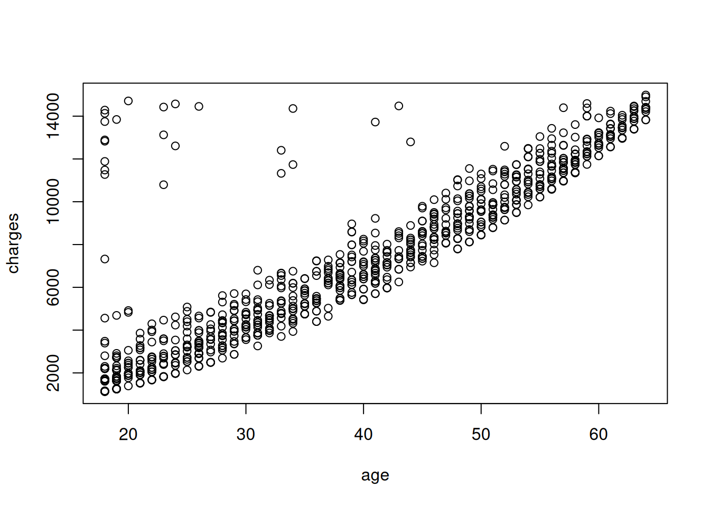
B %>%select(age, charges) %>%plot()
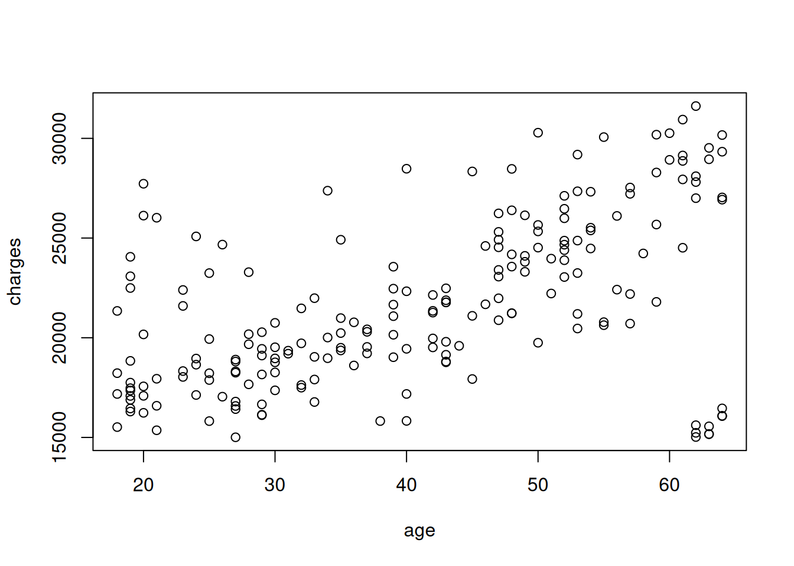
C %>%select(age, charges) %>%plot()
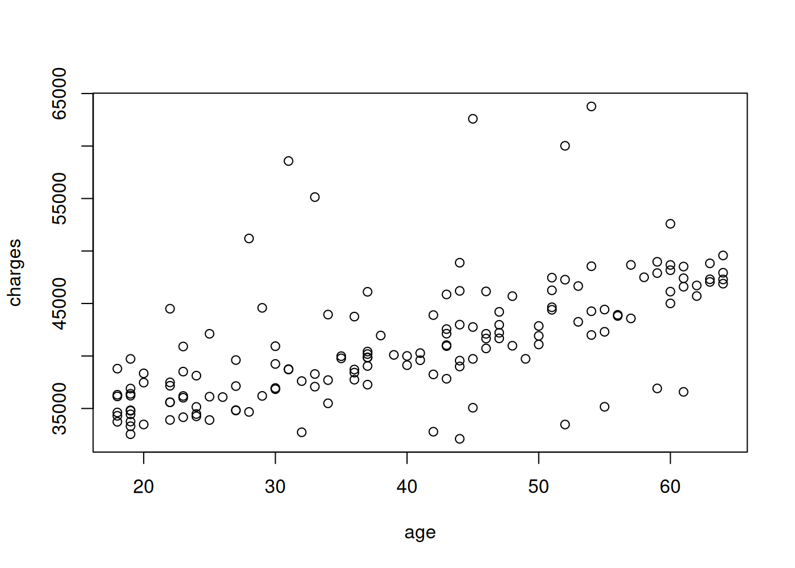
Cluster A
table(A$smoker)
no yes
973 7
table(A$sex)
female male
503 477
table(A$sex)
female male
503 477
table(A$children)
0 1 2 3 4 5
436 242 164 104 17 17
hist(A$bmi, main ="Distrubution of BMI", xlab ="BMI", ylab ="frequency", col ="lightblue", breaks =50)
hist(A$age, main ="Distrubution of age", xlab ="age", ylab ="frequency", col ="lightblue", breaks =50)
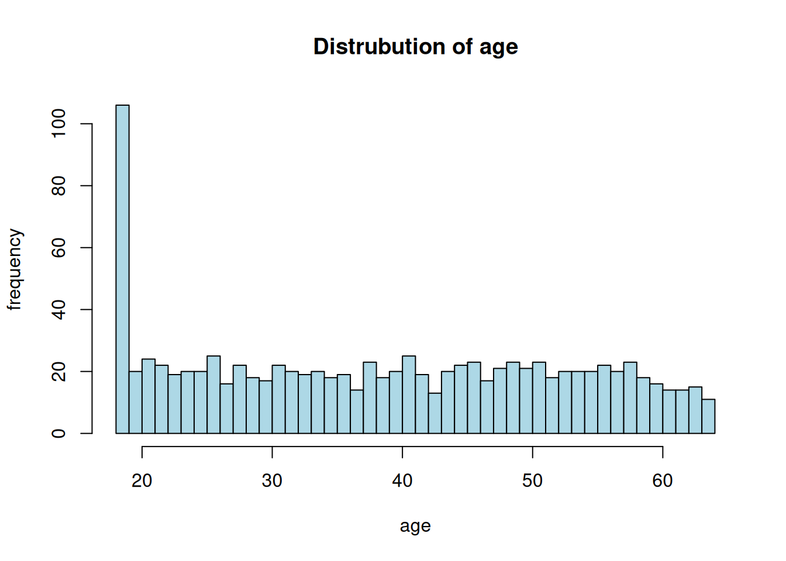
summary(A)
age sex bmi children
Min. :18.00 Length:980 Min. :15.96 Min. :0.000
1st Qu.:26.00 Class :character 1st Qu.:26.10 1st Qu.:0.000
Median :39.00 Mode :character Median :30.20 Median :1.000
Mean :38.85 Mean :30.49 Mean :1.056
3rd Qu.:51.00 3rd Qu.:34.32 3rd Qu.:2.000
Max. :64.00 Max. :53.13 Max. :5.000
smoker region charges
Length:980 Length:980 Min. : 1122
Class :character Class :character 1st Qu.: 3702
Mode :character Mode :character Median : 6789
Mean : 7112
3rd Qu.:10411
Max. :14988
This main difference between Cluster A and the data-set at large seems to be the prevalence of smokers. A consists almost entirely of non-smokers. In fact, cluster A contains 91% of all non-smokers.
Cluster B
summary(B)
age sex bmi children
Min. :18.00 Length:203 Min. :17.95 Min. :0.000
1st Qu.:28.00 Class :character 1st Qu.:24.70 1st Qu.:0.000
Median :42.00 Mode :character Median :27.64 Median :1.000
Mean :40.69 Mean :28.14 Mean :1.251
3rd Qu.:52.00 3rd Qu.:30.11 3rd Qu.:2.000
Max. :64.00 Max. :41.91 Max. :5.000
smoker region charges
Length:203 Length:203 Min. :15007
Class :character Class :character 1st Qu.:18285
Mode :character Mode :character Median :21082
Mean :21655
3rd Qu.:24670
Max. :31620
table(B$smoker)
no yes
86 117
table(B$sex)
female male
102 101
table(B$children)
0 1 2 3 4 5
75 50 38 33 6 1
hist(B$bmi, main="Distribution of BMI", xlab ="BMI", ylab ="frequency", col="lightblue", breaks=20)
hist(B$age, main="Distribution of age", xlab ="BMI", ylab ="frequency", col="lightblue", breaks=20)
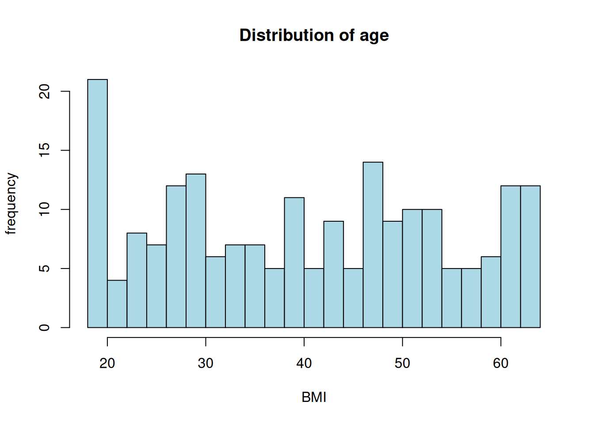
summary(B)
age sex bmi children
Min. :18.00 Length:203 Min. :17.95 Min. :0.000
1st Qu.:28.00 Class :character 1st Qu.:24.70 1st Qu.:0.000
Median :42.00 Mode :character Median :27.64 Median :1.000
Mean :40.69 Mean :28.14 Mean :1.251
3rd Qu.:52.00 3rd Qu.:30.11 3rd Qu.:2.000
Max. :64.00 Max. :41.91 Max. :5.000
smoker region charges
Length:203 Length:203 Min. :15007
Class :character Class :character 1st Qu.:18285
Mode :character Mode :character Median :21082
Mean :21655
3rd Qu.:24670
Max. :31620
Here, the main difference again appears to be distribution of smokers. People in cluster B are more likely to be smokers. They mean and median BMIs are also lower than the general dataset.
Cluster C
summary(C)
age sex bmi children
Min. :18.00 Length:155 Min. :17.77 Min. :0.000
1st Qu.:27.00 Class :character 1st Qu.:31.81 1st Qu.:0.000
Median :40.00 Mode :character Median :34.80 Median :1.000
Mean :39.55 Mean :35.05 Mean :1.135
3rd Qu.:51.00 3rd Qu.:37.06 3rd Qu.:2.000
Max. :64.00 Max. :52.58 Max. :4.000
smoker region charges
Length:155 Length:155 Min. :32109
Class :character Class :character 1st Qu.:36868
Mode :character Mode :character Median :40104
Mean :41225
3rd Qu.:44613
Max. :63770
table(C$smoker)
no yes
5 150
table(C$sex)
female male
57 98
table(C$children)
0 1 2 3 4
63 32 38 20 2
Cluster C contains almost entirely smokers. It has also has a higher median and mean BMI than the average, and is more male than the other groups. Among this group, BMI is correlated with high charges much more than in other groups:
C %>%select(bmi, charges) %>%plot()
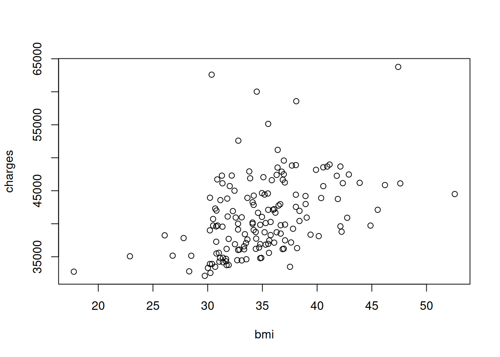
A %>%select(bmi, charges) %>%plot()
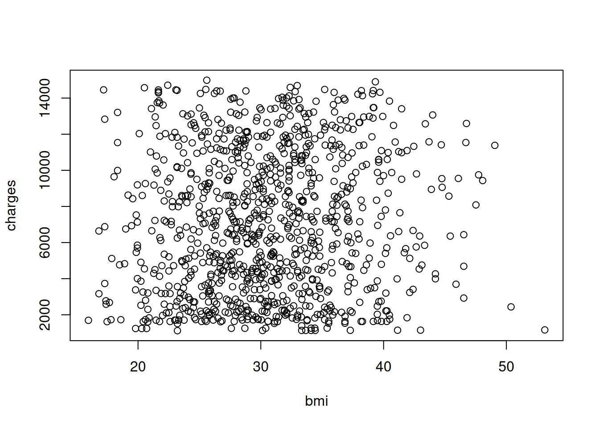
B %>%select(bmi, charges) %>%plot()
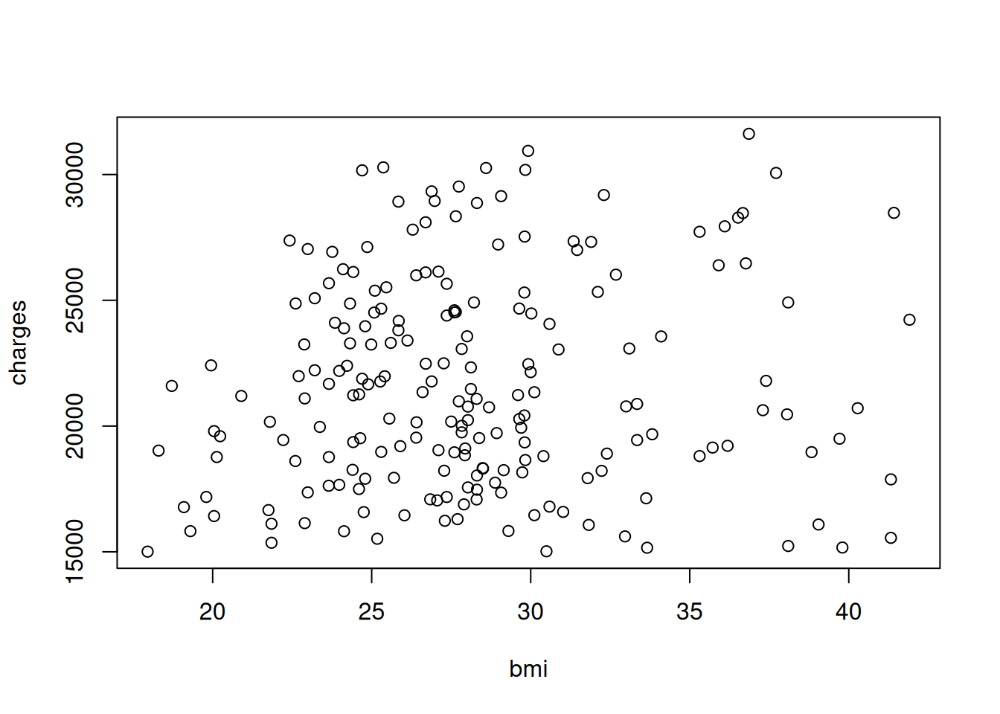
Let’s try a more sophisticated method of clustering: ## K-Means Clustering
age sex bmi children
Min. :18.00 Length:1338 Min. :15.96 Min. :0.000
1st Qu.:27.00 Class :character 1st Qu.:26.30 1st Qu.:0.000
Median :39.00 Mode :character Median :30.40 Median :1.000
Mean :39.21 Mean :30.66 Mean :1.095
3rd Qu.:51.00 3rd Qu.:34.69 3rd Qu.:2.000
Max. :64.00 Max. :53.13 Max. :5.000
smoker region charges cluster
Length:1338 Length:1338 Min. : 1122 Min. :1.00
Class :character Class :character 1st Qu.: 4740 1st Qu.:1.00
Mode :character Mode :character Median : 9382 Median :2.00
Mean :13270 Mean :1.89
3rd Qu.:16640 3rd Qu.:2.00
Max. :63770 Max. :3.00
Cluster 3 looks the most like partition A above, being the largest and containing almost exclusively non-smokers. Unlike the partitions above, however, every category here has a strong majority of either smokers or non-smokers. The clusters mostly have a pretty even sex ratio, with cluster 2 being more male.
One of the problems encountered when exploring the data was how skewed it was toward people without children. So, one thing we can do is collapse children into a boolean variable. When it comes to smoking, it makes sense to similarly turn this into a boolean variable to make it easier to use. The regions data has no clear ordering, so including it as-is could create some problems, especially considering the size of the dataset. Also, it is not very well correlated with charges, but has some correlations to other features, so I think it is likely to create overfitting problems. Sex is could create similar problems, since it is overrepresented in some of the clusters identified earlier.
We will use a linear regression model as a baseline/sanity check for the more complex models. Because this data-set is quite small, it is a bad idea to use models that require very large data sets. Instead, we will use a random forest model and an xgboost model. Also, I will avoid hyperparamater tuning, since it would likely lead to overfitting on such a small dataset
Results
LinearRidge:
CV MAE: $4,406.57 (±$343.06)
Test RMSE: $5,438.57
Test MAE: $3,928.22
Test R²: 0.792
RandomForest:
CV MAE: $2,840.81 (±$255.84)
Test RMSE: $3,294.50
Test MAE: $1,977.61
Test R²: 0.924
XGBoost:
CV MAE: $2,825.26 (±$225.83)
Test RMSE: $3,274.38
Test MAE: $1,951.44
Test R²: 0.925
The Linear Model performed quite well, which hints that the relationships in this data-set are not very complex. In fact, it is possible that that the random forest and xgboost models are overfitting to the data, as their R^2 values are quite high. Both the Random Forest and XGBoost regression model had significantly higher performance, although they are roughly equal. Now, lets take a look at how each of the models predict the data. First, examining the weights on the linear model:
These make sense: looking at the binary variables, smoking is much more heavily weighed than having children, and BMI and age both having strong positive correlations.
Examining the random forest model, we can see that the most important feature by far is the smoking indicator, and the least important feature is the children indicator: 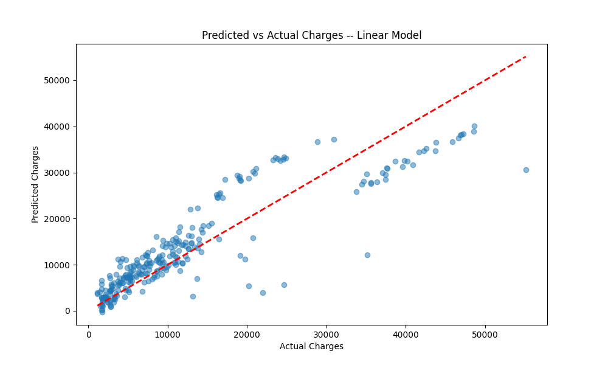
random forest importances: [0.11896813 0.17759035 0.00896635 0.69447517]
Similarly, for the XGBoost Model, the smoking indicator is the most heavily weighed. In this case, it is even more heavily weighed, which is interesting because it has very similar performance to the random forest model. The order of features is also the same, with the biggest difference being how much more important smoking is than the other features in the xgboost model.
When considering the possible business insights that this data could provide, it is of course important to remember all of the limitations mentioned above, particularly the size of the data set, as well as the fact that this data set does not contain information on policy holders with no charges. So, while none of these models can or should be used to accurately predict the amount that a claims-holder will charge their health insurance, they could still be informative for figuring out how to price health insurance, by placing a cost on the worst case scenario (that a policy holder takes out a claim), and then weighting that by the probability that they take out a claim at all. It could also be worthwhile to further explore the clusters identified in the data exploration section to see if pricing can be adjusted for more specific populations. The biggest take away from all of the models, supported by the difference in distributions of charges for smokers and non-smokers, is that smokers are much more expensive to insure than non-smokers, and that smoking is more important in predicting expensive charges than even age and bmi, and remains predictive among different age and bmi groups.
Similarly, even though age is very strongly correlated with higher costs when the data set is partitioned into cost buckets, it is not very good at predicting which bucket a policy holder will end up in, which is why it is relatively unimportant in the predictive models. Similarly, BMI is not very good at predicting costs on its own.